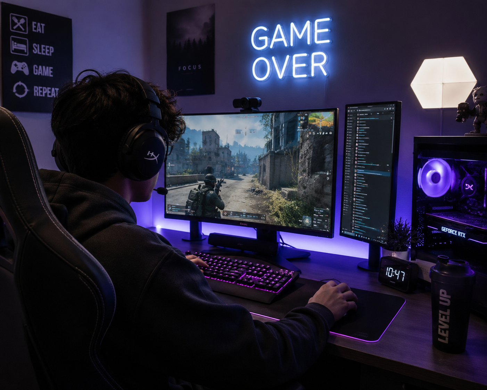

Gaming has become one of the most popular forms of entertainment around the world. People can play games on computers, consoles, phones, and many other devices. What started as simple arcade games has grown into a massive industry with realistic graphics, detailed stories, competitive tournaments, and online communities.
One of the things that makes gaming interesting is the variety of experiences it can provide. Some games allow players to explore huge open worlds, while others focus on competition, creativity, strategy, or storytelling. Games can also give players the freedom to build and create their own environments.
Gaming can also be a social experience. Online multiplayer games allow friends and strangers to communicate and work together even when they live far apart. Streaming platforms and gaming communities have made it possible for people to share their experiences, watch other players, and connect through games they enjoy.
For me, gaming is a way to relax, have fun, and experience different creative worlds. I especially enjoy how games combine visual design, music, technology, and interaction. As technology continues to improve, gaming will continue to change and create new ways for people to play, create, and connect.